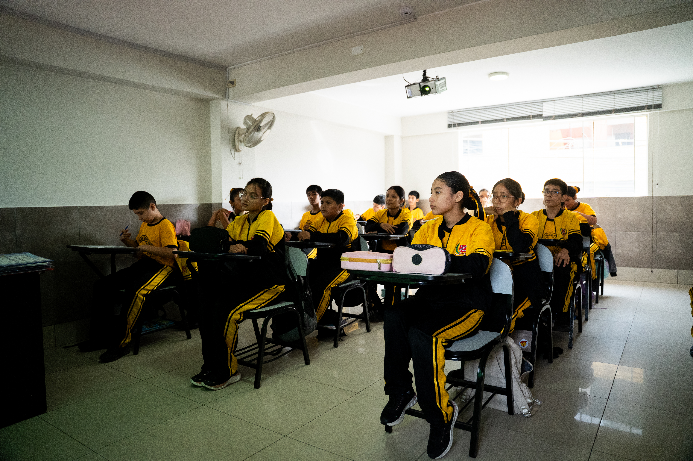

Colegio
SANTO DOMINGO DE GUZMÁN
Colegio
SANTO DOMINGO DE GUZMÁN
Colegio
SANTO DOMINGO DE GUZMÁN
Colegio
SANTO DOMINGO DE GUZMÁN
Aplica sus cualidades éticas: responsabilidad, autoestima, altruismo, integridad y honestidad.
Mantiene un espíritu crítico y defiende siempre la dignidad humana.
Lidera y orienta equipos con eficacia para cumplir plazos con calidad.
Conoce y aplica estrategias de desarrollo personal de acuerdo a las necesidades del adolescente.
En la sede Flores de la Institución Educativa Particular "Santo Domingo de Guzmán", entendemos que el nivel secundaria es una etapa de transformaciones profundas, desafíos y grandes oportunidades. Por ello, nuestra propuesta educativa va más allá de la exigencia académica tradicional; nos enfocamos en una formación integral que equilibra el desarrollo intelectual, la madurez emocional y el compromiso social de nuestros adolescentes.
Nuestra metodología se sostiene sobre cuatro pilares fundamentales en el día a día de la sede Flores:

Conoce algunas de las experiencias, proyectos, actividades que forman parte de la vida de nuestros estudiantes del Nivel Secundaria.